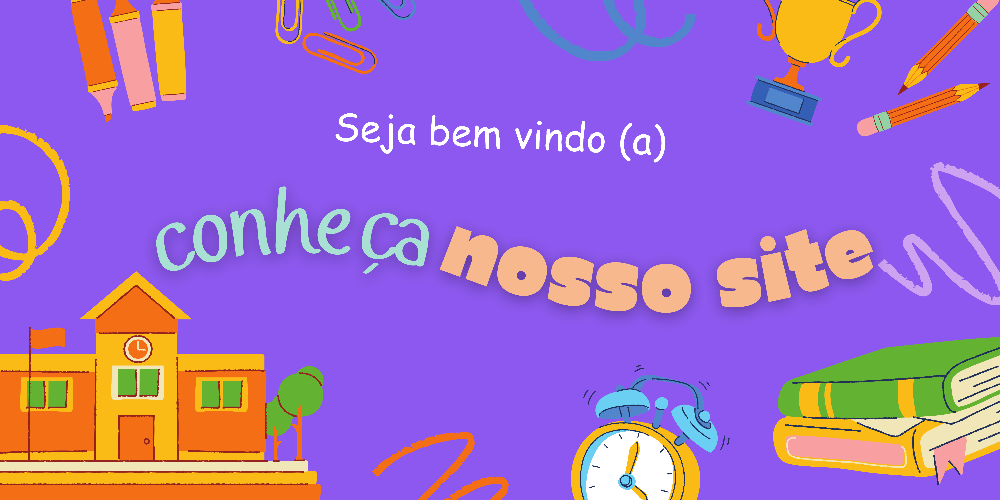
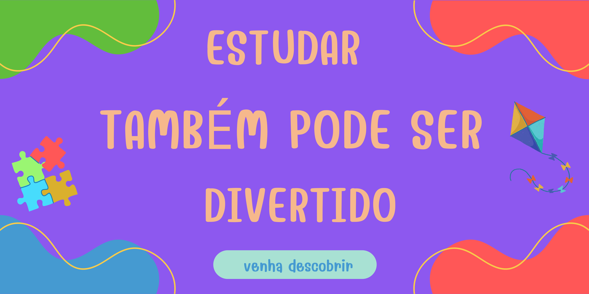

É o método mais utilizado em instituições educacionais na atualidade. Esta modalidade consiste
na imagem de autoridade no professor, ou seja, em sala de aula, o professor terá o papel principal.
Surgiu no século XVIII e tem como meio principal a disciplina, então, é estabelecida uma relação de
respeito com o professor, e alunos que não obedeçam as regras sofrem punições.
O site proporciona não só ao nosso público alvo
Criada pela médica Maria Montessori, a educação montessoriana se baseia na ideia
contrária da
educação tradicional, pois da liberdade ao aluno e estabelece uma relação de respeito mútua
entre aluno e professor. Nesse método, o professor colabora com o aluno, porém não interfere em
suas decisões. Este método auxilia
na autonomia das crianças e na criação da responsabilidade
quanto ao seu aprendizado.
Este método foi criado em 1919 pelo filósofo Rudolf Steiner. Consiste na ideia do aluno criar
suas
própria ferramentas de estudos com argila, focando na educação total dos alunos.
Nesta modalidade, os alunos ficam durante todo o período escolar na mesma turma e com
o mesmo professor.